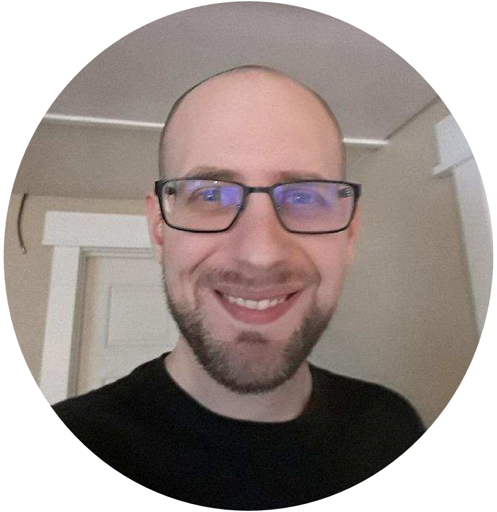
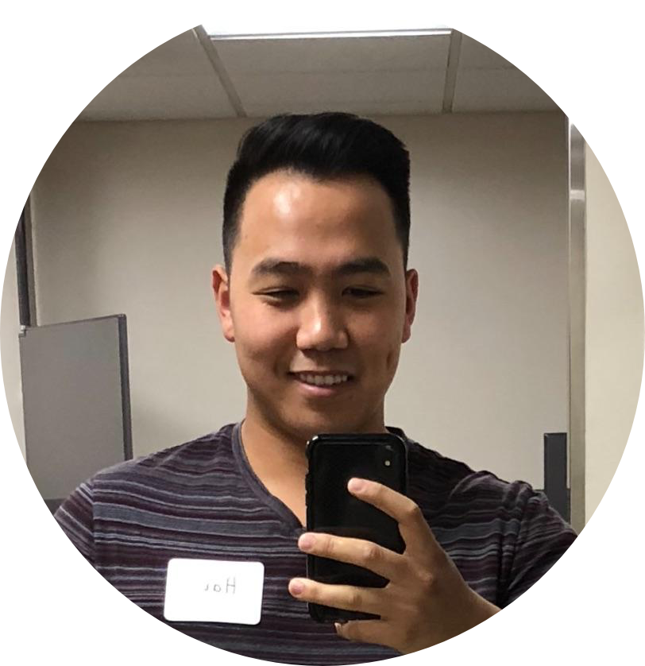
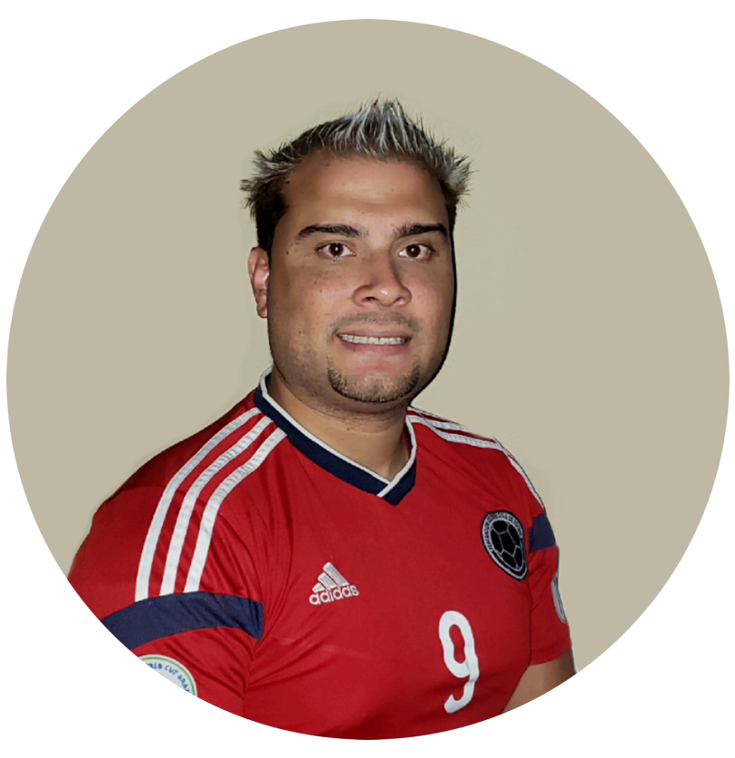

- Our Mission -
As young developers, the challenge is to learn programming and understand the concepts. Furthermore, understanding three different languages coherently may leave an individual running to another career. However, utilizing a game function that allows a user to focus and obtain those concepts will further development into HTML, CSS, and JavaScript.
A life-long computer and tech enthusiast, Chris has a passion for new emerging technologies. He served in the Marine Corps as a telecommunications technician and has worked as a network administrator and as an operations support specialist for a small start-up company. Chris continues to pursue education and experience in the tech fields through conventional college courses and intensive training programs. Today, he is a student at Code Fellows and a software developer with a passion for creating innovative technology and expanding his knowledge base.
Hai is currently studying software development at Code Fellows. The critical thinking aspects of software development appeal to him and his logical nature. One of his best assets is his curiosity and the need to pursue knowledge. One of Hai’s passion is to help people utilize and understand technology efficiently. Hai is working towards his goal of making technology accessible and user-friendly to people in developing nations so that they may pursue their passions and knowledge. By empowering people through education, Hai hopes to combat poverty and the socioeconomic differences generated by technology gaps in the world.
J. was a program and recruitment manager for over ten years with experience in recruiting, sales, and marketing. However, his passion for technology and gaming has evolved to become a software developer. Working with a non-profit, J. has been recognized professionally and academically for outstanding performance, professionalism, and for providing exceptional interpersonal skills. Recently, J. has turned to Code Fellows to become a software developer and assist future clients' to conceptualize and pioneer new ways to develop software that conforms to or exceeds their needs.